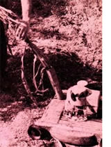

Any old power mower - even the one you intend to keep using on your lawn - can be converted to a mulcher with the addition of a simple feeding chute approximately three inches in diameter.
The chute can be a section of discarded (but still good) chimney pipe, rain gutter downspout, PVC plumbing, or any other scrap of substantial tubing that can be braised onto the mower's body or attached with angle brackets. Just make sure the feeder chute is long enough to keep your hands and arms well out of the cutting machine's blade. You'll also find it a good idea to make the spout about as long (and mounted at the same slight angle) as the feeder tube in the accompanying photograph: If you do, you'll find that-once started-almost any weeds or other vegetation poked down the pipe will self-feed themselves right on through as they're chopped off by the whirling knife below.
Feeding will be easier, too, if you take the time to slightly flare the top of the add-on spout before you mount it on your mower. If the tube is thin metal, you can open its inlet end a bit by peening it out with a hammer. PVC pipe can be flared by heating it in boiling water, and then forcing it down over a tapered object.
When you use your mower as a shredder-grinder, you can block the machine up very securely on a raised wooden or cement block platform, if you like, to create clearance for the growing mulch pile underneath. (But never, never reach under the mower with your hand to scoop any of that mulch away while the machine is running!) Or you can just use this mini-mulcher right out in the garden, and move the machine along as necessary as you grind vegetation through it.
If your mower's blades are kept sharp, this "poor man's" mulcher will demolish even the toughest cornstalks in seconds. -Gordon & Janet Groene.
|
 PHOTO BY THE AUTHOR |
|
|